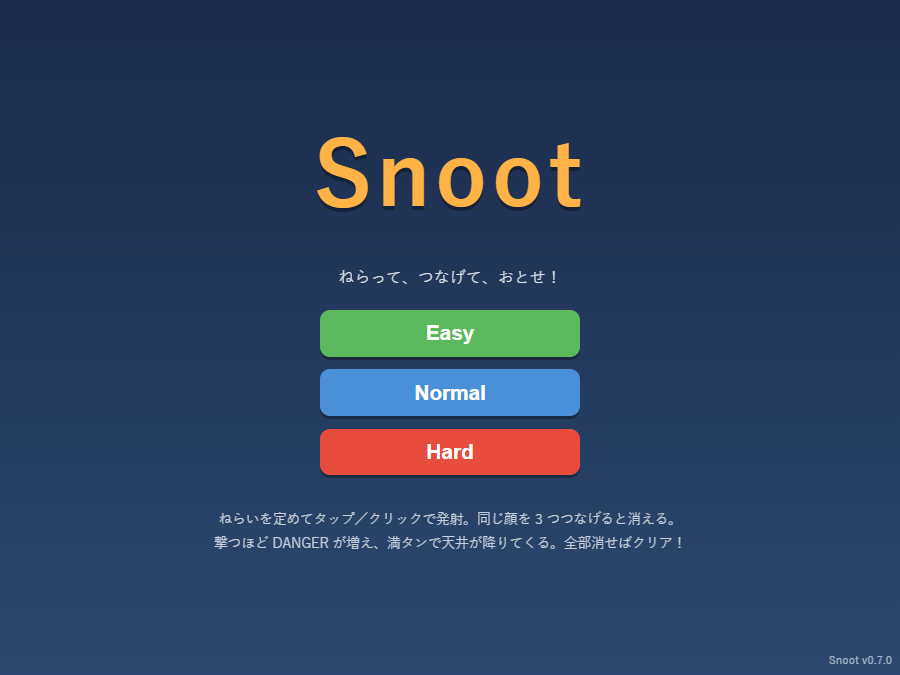
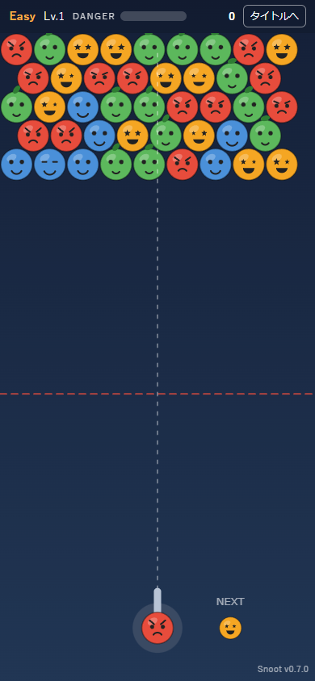

このサイトについて
かつて Mac で人気を博したゲーム Snood をオリジナル素材で再現する
ブラウザゲーム「Snoot」の開発過程を、step ごとに文書として残したもの。
開発フローは次の 5 step（project.txt で定義）。


- Snood がどんなゲームかを調査する
- 調査・フィードバックに基づき Snoot を制作する
- 人間が実際にプレイして面白さと再現度をチェックする
- フィードバックに基づき step2→3 を反復する（バージョンを上げながら）
- 一般公開用サイトを作成し XServer に本番デプロイして完了
バージョン別に遊ぶ（進化の過程）
フィードバックを反映するたびにバージョンを上げてきた。各版をそのまま遊べるので、 ゲームがどう進化したかを比べられる。一覧は新しい順に並べている。
- v0.9.10 — iPhone でバージョン表示部に残る背景色の帯を根本解消（ルート背景を画面別に切替＋盤面を不透明色で塗る）（フィードバック #14 追従）
- v0.9.9 — 着弾判定を最近傍セル（ボロノイ）方式に刷新し、原作どおりねらった角度で奥のくぼみへ撃ち込めるようにした（感度パラメータを廃止）（フィードバック #16）
- v0.9.8 — 奥行き許容の感度をさらに調整（奥へ入りやすく）＋開発者向けの着地予測表示を追加（フィードバック #15 のプレイ感調整）
- v0.9.7 — 奥行き許容の感度を調整し、奥のくぼみへより入りやすくした（フィードバック #15 のプレイ感調整）
- v0.9.6 — キャラのセット位置に奥行きの許容範囲を追加（ねらった線の奥のくぼみまで入れられる／原作 Snood 準拠）（フィードバック #15）
- v0.9.5 — iPhone でゲーム画面下端に残る横線を根本解消（盤面が全幅のとき枠も盤面色に統一）（フィードバック #14）
- v0.9.4 — iPhone でバージョン表示下の帯を盤面と同色にして違和感を解消（フィードバック #13）
- v0.9.3 — iPhone 画面下端の背景継ぎ目（バージョン表示下の横線）を解消（フィードバック #12）
- v0.9.2 — iPhone スタンドアロン時の画面下端の白い余白を解消（フィードバック #11）
- v0.9.1 — iPhone 等のステータスバー（セーフエリア）と HUD の重なりを修正（フィードバック #10）
- v0.9.0 — PWA 化（ホーム画面追加・スタンドアロン起動）とアプリアイコンの「ネムリ」化（フィードバック #9）
- v0.8.1 — ハイスコア画面を枠外タップでも閉じられるよう改善（フィードバック #8）
- v0.8.0 — ハイスコア保存（難易度別 Top5・名前入力）を追加（フィードバック #7）
- v0.7.0 — レベルアップで段階的に難化する仕様を追加（フィードバック #6）
- v0.6.0 — 落下キャラも驚き顔＋大量落下のファンファーレ（フィードバック #5）
- v0.5.0 — 消滅時の驚き顔＋消滅数連動の効果音（フィードバック #4）
- v0.4.0 — キャラの表情アニメーションを追加（フィードバック #3）
- v0.3.0 — スマホの操作エリアを拡大（フィードバック #2）
- v0.2.0 — 難易度別のキャラサイズを PC でも統一（フィードバック #1）
- v0.1.0 — 初版（バブルシューターの基本：発射・マッチ消去・落下・危険ゲージ）
文書一覧
- step1：Snood とはどんなゲームか（調査結果） — 基本ルール・危険ゲージ・難易度・スコアリングの調査まとめ
- step2：Snoot v0.1.0 制作記録 — 技術構成・実装内容・遊び方
- step3：プレイフィードバック記録 — 指摘と対応（バージョン履歴を兼ねる）
- step4：PWA 化とアプリアイコン変更（v0.9.0） — テストプレイ用のインストール対応とアイコンの「ネムリ」化